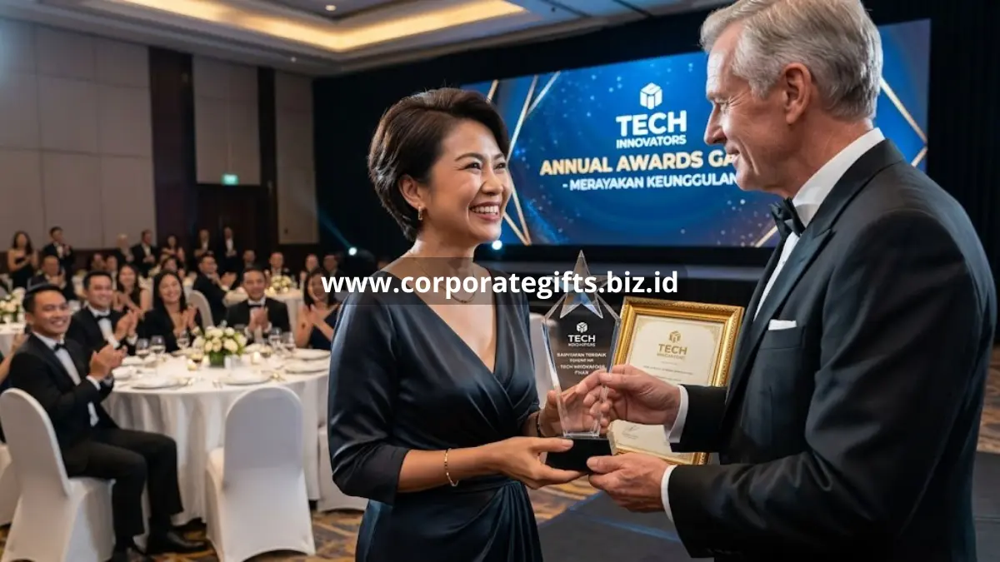

Poin Penting:
- Hadiah karyawan perusahaan berfungsi sebagai alat retensi sekaligus penguat budaya kerja.
- Waktu pemberian yang tepat memperbesar dampak emosional hadiah terhadap karyawan.
- Pilihan hadiah yang fungsional dan elegan lebih diingat dibanding barang generik.
- CorporateGifts menyediakan kustomisasi logo dan pemesanan skala besar untuk kebutuhan perusahaan Anda.
Banyak perusahaan di Indonesia kini menjadikan program apresiasi karyawan sebagai bagian dari strategi human resources tahunan, bukan lagi sekadar acara seremonial. Pendekatan ini terbukti membantu menekan tingkat pergantian karyawan sekaligus memperkuat citra perusahaan di mata talent yang lebih luas.
Artikel ini membahas secara menyeluruh mengapa hadiah karyawan penting, kapan waktu terbaik untuk memberikannya, pilihan produk yang paling relevan, hingga alasan CorporateGifts menjadi mitra yang tepat untuk pengadaan hadiah karyawan perusahaan Anda.
Apa Itu Hadiah Karyawan Perusahaan dan Mengapa Penting?
Hadiah karyawan perusahaan adalah instrumen apresiasi berbentuk fisik yang diberikan HRD atau manajemen sebagai pengakuan atas kontribusi, loyalitas, atau momen penting karyawan. Fungsinya melampaui sekadar hadiah simbolis karena berdampak langsung pada engagement tim.
Definisi dan Fungsi Hadiah Karyawan Perusahaan
Secara umum, hadiah karyawan perusahaan mencakup barang-barang praktis seperti perlengkapan kantor, drinkware, apparel berlogo, hingga gadget kerja yang dipersonalisasi dengan identitas perusahaan. Fungsi utamanya adalah menyampaikan pengakuan atas kerja keras karyawan sekaligus memperkuat rasa memiliki terhadap perusahaan tempat mereka bekerja.
Manfaat Hadiah Karyawan bagi Loyalitas dan Retensi Tim
Karyawan yang merasa dihargai secara konsisten cenderung bertahan lebih lama dan menunjukkan kinerja yang lebih stabil. Program hadiah karyawan yang terstruktur membantu perusahaan menekan biaya rekrutmen ulang karena tingkat resign yang lebih rendah, sekaligus menjaga semangat kerja tim tetap tinggi dalam jangka panjang.
Peran Hadiah Karyawan dalam Membangun Budaya Kerja Positif
Selain manfaat individual, hadiah karyawan juga berperan membentuk budaya kerja yang hangat dan suportif. Ketika apresiasi diberikan secara terbuka dan konsisten, karyawan lain turut termotivasi untuk berkontribusi lebih baik, sehingga tercipta lingkungan kerja yang kompetitif secara sehat.

Kapan Waktu Terbaik Memberikan Hadiah Karyawan Perusahaan?
Waktu pemberian hadiah sangat memengaruhi kesan yang diterima karyawan. Empat momen berikut adalah titik krusial yang paling sering dimanfaatkan perusahaan untuk memberikan apresiasi secara maksimal.
Momen Onboarding Karyawan Baru
Pemberian welcome kit saat karyawan baru bergabung membantu menciptakan kesan pertama yang profesional dan hangat.
Perayaan Ulang Tahun Karyawan
Ulang tahun adalah momen personal yang, jika dirayakan dengan hadiah yang tepat, mampu membuat karyawan merasa benar-benar diperhatikan sebagai individu, bukan hanya sebagai bagian dari tim.
Apresiasi Pencapaian dan Kinerja Karyawan
Reward atas pencapaian target atau masa bakti tertentu memberikan validasi nyata atas kerja keras karyawan.
Hari Raya dan Penutupan Tahun
Momen hari raya dan akhir tahun menjadi kesempatan perusahaan menyampaikan terima kasih secara kolektif kepada seluruh tim atas dedikasi sepanjang periode kerja yang telah dilalui.
Apa Saja Pilihan Hadiah Karyawan Perusahaan yang Elegan dan Fungsional?
Hadiah karyawan yang ideal menggabungkan nilai fungsional dengan tampilan yang elegan sehingga tetap relevan digunakan dalam aktivitas kerja sehari-hari.
Perlengkapan Kantor Premium
Set alat tulis premium seperti notebook kulit dan pulpen metal memberikan kesan profesional yang bertahan lama karena digunakan langsung dalam rutinitas kerja karyawan.
Drinkware Custom Eksklusif
Tumbler dan mug custom berlogo perusahaan menjadi pilihan favorit karena praktis, sering terlihat, dan berfungsi sebagai media branding berjalan baik di dalam maupun luar kantor.
Gadget dan Aksesoris Kerja
Powerbank, flashdisk custom, dan aksesoris elektronik lain memberikan nilai kepraktisan tinggi bagi karyawan yang aktif bekerja secara mobile atau hybrid.
Apparel Berlogo Perusahaan
Jaket, polo shirt, dan totebag berlogo memperkuat identitas visual tim sekaligus menumbuhkan rasa kebersamaan, terutama saat digunakan bersama dalam acara internal perusahaan.
Mengapa Memilih CorporateGifts untuk Kebutuhan Hadiah Karyawan Perusahaan Anda?
CorporateGifts memahami bahwa setiap perusahaan memiliki kebutuhan branding dan anggaran yang berbeda, sehingga layanan dirancang fleksibel untuk berbagai skala pemesanan.
Kustomisasi Logo Presisi Tinggi
Setiap produk dapat dicetak dengan logo perusahaan menggunakan teknik yang presisi, memastikan hasil akhir tampil profesional dan konsisten dengan identitas brand.
Produk Premium dan Siap Pakai
Katalog CorporateGifts dikurasi dari bahan berkualitas dan desain fungsional, sehingga hadiah yang diterima karyawan benar-benar digunakan, bukan sekadar disimpan.
Layanan Pemesanan Skala Besar yang Efisien
Untuk kebutuhan ratusan hingga ribuan unit sekaligus, tim CorporateGifts siap membantu proses produksi dan pengiriman secara terjadwal agar sesuai dengan momen apresiasi yang direncanakan HRD.
Hadiah karyawan perusahaan bukan sekadar formalitas, melainkan investasi jangka panjang untuk loyalitas dan budaya kerja yang sehat. Memilih waktu pemberian yang tepat dan produk yang fungsional akan memperbesar dampak apresiasi tersebut bagi tim Anda.
FAQ
1. Apa definisi hadiah karyawan perusahaan?
Hadiah karyawan perusahaan adalah instrumen apresiasi berbentuk fisik yang diberikan perusahaan sebagai pengakuan atas kontribusi, loyalitas, atau momen penting karyawan.
2. Kapan waktu terbaik memberikan hadiah karyawan?
Beberapa waktu terbaik adalah saat onboarding karyawan baru, ulang tahun, perayaan pencapaian target, dan akhir tahun atau hari raya.
3. Apa manfaat hadiah karyawan bagi perusahaan?
Karyawan akan lebih loyal, meminimalisir pergantian (resign), serta menciptakan budaya kerja yang positif dan suportif.
4. Apa saja contoh pilihan hadiah karyawan yang tepat?
Anda bisa memilih barang fungsional dan elegan seperti perlengkapan kantor premium, drinkware custom, gadget kerja, dan apparel berlogo perusahaan.
5. Mengapa harus memilih CorporateGifts untuk pengadaan hadiah karyawan?
Karena CorporateGifts menawarkan produk premium dan siap pakai, kustomisasi logo presisi tinggi, dan mampu menangani pemesanan skala besar secara efisien.
Butuh rekomendasi cepat untuk corporate gift?
Chat tim Pusat Souvenir & Merchandise Kantor untuk kurasi pilihan sesuai budget & kebutuhan brand Anda.